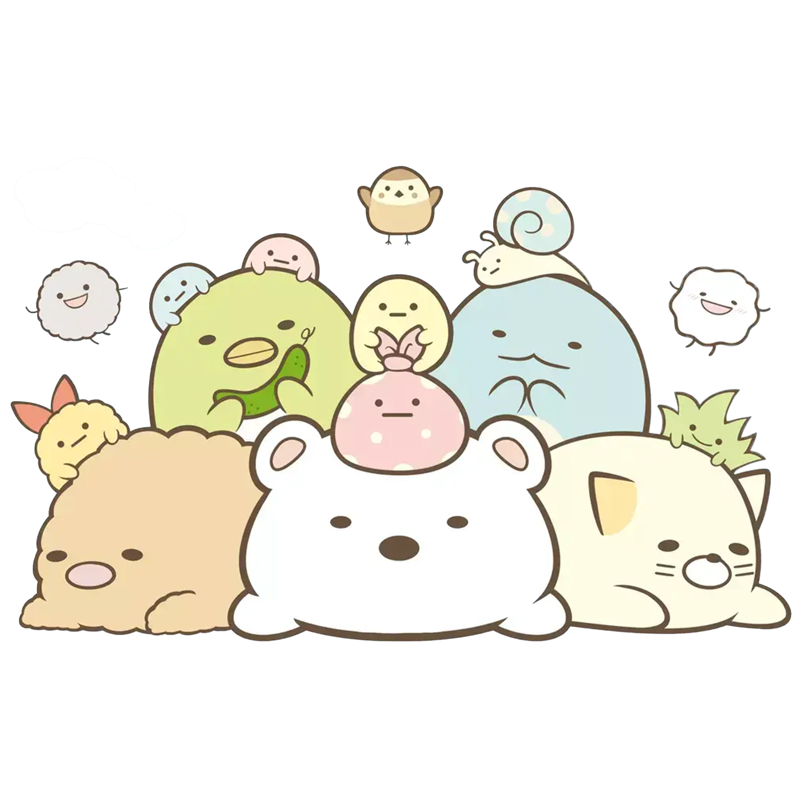

Sumikko Gurashi
Sumikko Gurashi is a set of fictional characters produced by the Japanese company San-X. The name directly translates to "life in the corner". Their main inspiration was the feeling of comfort when one is near a corner, and they were based on Yokomizo's notebook doodles when she was a student. A wealth of merchandise, such as stationery, plush toys, and clothing, is sold. Books,mobile apps, and video games based on the franchise have also been produced. Three animated films with Sumikko Gurashi were released in 2019, 2021, and 2023.
Main Characters
Shirokuma
A shy polar bear who ran away from the Arctic Circle. It is sensitive to the cold and feels most at home while drinking hot tea in the corner. It likes to draw and bathe in hot springs and has an easygoing personality.
Penguin
Resembles a green penguin, but is unsure if it really is one. It likes eating cucumbers and has vague memories of having a plate on its head (both of which strongly imply that it is a kappa).
Tonkatsu
An edge slice from a fried pork cutlet. It is composed of 1% meat and 99% fat, so it was left behind on its plate after the meal finished. It often puts condiments like sauce, salt, and mustard on itself to assert that it is still edible.
Neko
A timid and socially anxious calico cat. It is self-conscious about its rotundity. It often gives the corner away to other Sumikko because of its personality. It feels safe when snugly covered, like in a pouch or under an empty cat food can.
Tokage
An aquatic dinosaur who poses as a lizard to avoid being captured. It was separated from its mother, but they later reunited. It is friends with Nisetsumuri, the fake snail, and Tokage (Real), who is an actual lizard. characters but was added after about three years.